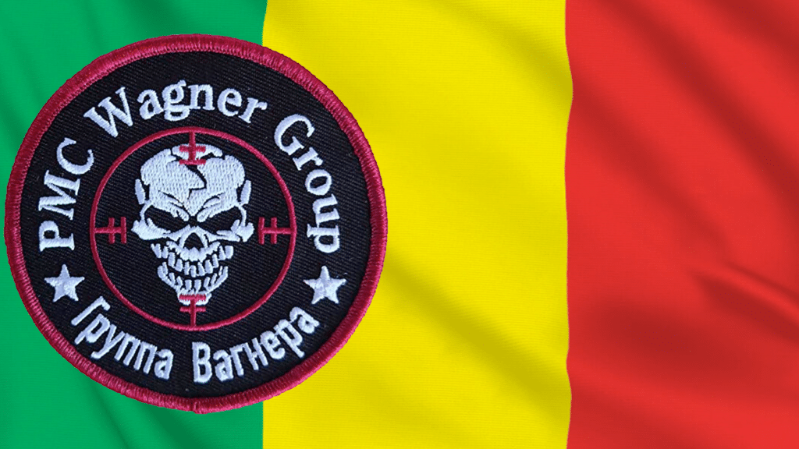

О Мали
Мали — страна занимающая 1 240 192 км² — это второе по площади государство в Западной Африке. До 1958 года была колонией Франции (Французский Судан). Государственный язык — французский. Административно-территориальное деление: 7 областей и особая административная единица (дистрикт) Бамако. Столица — Бамако. В XII–XV веках Мали была мощной империей, охватывавшей огромные территории. Ее могущество определялось положением на перекрестке торговых путей Африки и стало угасать после открытия морских путей вокруг континента и перемещения центров торговли на побережья. Удаленность от моря и сейчас затрудняет развитие страны. © «wikiway.com»
Достопримечательности
Великая мечеть Дженне
Город Дженне и его необычная мечеть находятся в стране Мали (Африка). Город находится в пойме реки Бани, поэтому в период дождей транспортное сообщение здесь нерегулярное, из-за разлива речных вод. Долгие столетия город был известен, как центр золототорговли. Постепенно здесь особую популярность обрел ислам, и уже в 15-16 веках Дженне прослыл мусульманским религиозным центром, из которого ислам распространялся на другие территории.
Мечеть Джингеребер
Мечеть Джингеребер — центральная мечеть города Тимбукту в Мали. Ее причудливый минарет, издали похожий на огромный муравейник или термитник, доминирует над глиняными постройками. За исключением маленькой части северного фасада, построенной из известняка, мечеть Джингеребер сделана из глины с добавлением дерева, соломы и растительных волокон. У этого строения есть три внутренних помещения, два минарета и 25 рядов столбов, выровненных с востока на запад, молитвенный зал на 2 000 человек.